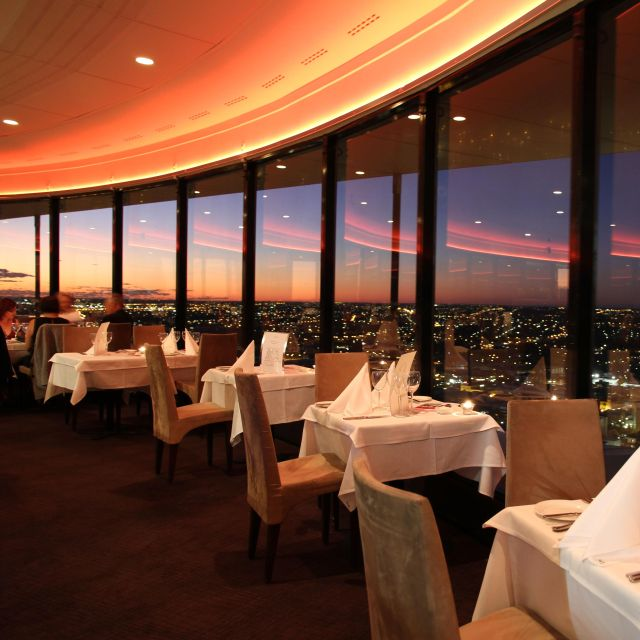
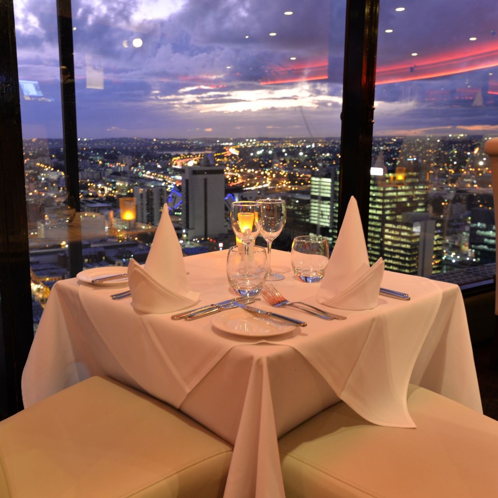

Welcome to "Culinary Haven" - where the art of dining is elevated to an unforgettable experience. Nestled in the heart of the city, our restaurant is a culinary gem that beckons food enthusiasts and connoisseurs alike.
Step inside and be transported to a world of gastronomic delight. Our restaurant exudes an ambiance that is both contemporary and cozy, perfect for an intimate dinner for two or a gathering of friends and family. The warm, dimly lit space with its tasteful decor creates an inviting atmosphere, making it the ideal setting for any occasion.
At Culinary Haven, we take pride in our diverse menu that caters to a variety of tastes and preferences. Whether you're a fan of sizzling steaks, fresh seafood, or prefer vegetarian options, our chef-curated dishes are sure to tantalize your taste buds. We source the finest, locally-sourced ingredients and blend them with global flavors, resulting in a menu that is a fusion of traditional and innovative culinary delights.